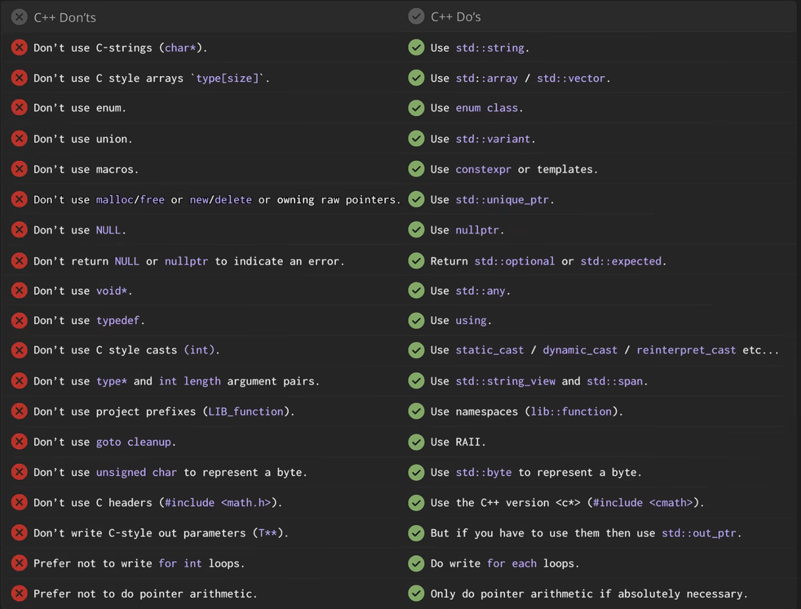
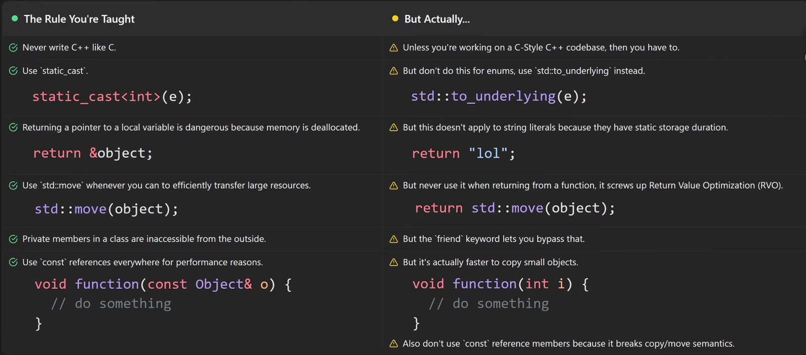

C++知识点
- 和C#的函数默认支持多态不同，C++需要显式virtual关键字声明才能支持多态
- C++的类型转换可以但是不推荐使用
int(x)或者(int)x的写法，这种C like写法在C++里不提供任何报错，它会自动遍历static_cast/dynamic_cast/const_cast/reinterpret_cast这四种转换类型，直到能转换为止，所以写的时候还是要显式的使用这四种转换 - C/C++里，头文件里的挺多错误编译器是不会管的，比如这种：
|
|
实际上是完全相同的，因为符号匹配只看 void(int, int) 和 void(int, int)，参数名不参与 mangling
- C++的宏是纯文本替代，无视所有范围限制，污染一切引用了它的代码
- std::endl会刷新(清空)缓冲区，所以很慢，还是要用
\n

- 经典傻逼错误之引用库的顺序不对导致宏挤占了下一个库的关键字然后编译失败：
1 2#include <winsock2.h> #include <windows.h> - C++的Vector是个动态数组，所以也像所有迭代的时候向迭代目标添加元素导致的报错那样──如果在迭代一个vector的时候向其中增加元素，其大小变化会导致内存重新分配，然后重新申请内存地址，将现有数组的元素放到新的内存地址上，这样下来，指向旧地址的迭代器就会失效，变成野指针，然后程序崩溃，删除同理
- 傻逼的std::unordered_map即C++的Hash Map抽象会在
map[key]找不到的时候直接插入这个key，最佳实践居然是if(map.find(key) != map.end()),和迭代器的路数一样 - 更傻逼的是，如果你写map.insert(key,value),如果key已经存在，它不会默认覆盖，而是会无视你插入的操作，要用
insert_or_assign方法 - 可以在写参数的时候用
const关键字来保证在函数内部引用的值不会被改动：void print(const T& value) - 结构化绑定：
|
|
- 内省即程序在运行期或编译期查看自身数据结构的能力，C#的反射机制即是依赖此功能，上文的结构化绑定也是一种内省，“编译期内省”，但是属于编译器自己操作，并没有将这个能力开放给程序员，C++26倒是打算开放出来来着，不过那是未来的事了
- 冷知识，C++是静态弱类型语言，它允许程序员绕过类型系统，下面的这种写法是完全能通过编译的：
|
|
- C++的编译器在Debug模式下和Release模式下的行为不一样，如经典的UB(未定义行为)在编译器的不同优化程度下行为不同,不同操作系统下的不同编译器下的结果不同，比如对变量初始化这茬
|
|
这段代码执行出来，输出在终端上的是多少都有可能，0或者一个随机数，编译器想干嘛就干嘛
- C++没有稳定的ABI标准，所以C++的包管理器基本上都是直接把对应库的源代码拉下来然后在本地编译，绝了，这语言真是大屎山了
- C++也不支持模式匹配，且未来十年内都不用想了
- 为了不折腾头文件，C++憋出来了个header-only范式，即将头文件和代码实现所有的内容都放到一个.hpp文件里，到时候直接引用这一个文件，天哪没有命名空间存在的垃圾
- 写出来的代码默认带ASan跑过一次，才算是在C++意义上的相对安全
- Clion的傻逼操作之一，默认自带MinGW的编译器，语法静态解析用Clangd,然后编译出来的compile_commands.json直接让clangd看不懂，然后就给一些完全没有问题的语法报错，太棒了草（
C++有这样几种常见的声明
| 声明 | 大致含义 |
|---|---|
T value |
直接拥有一个值 |
T& ref |
另一个对象的别名，不能为空 |
const T& ref |
只读别名，常用于函数参数 |
T* ptr |
指针，可以为空，可以改变指向 |
const T* ptr |
指向只读对象的指针 |
-
众所周知，C++的头文件系统就是把内容到处复制，所以最好在头文件开头加一句：
1#pragma once来避免重复内容被来回复制
-
引用头里
<...>一般是标准库或第三方库，而”xxx/xxx“一般是当前项目自己的头文件，这是一种惯例，但是实际上不这么写也屁事没有，编译完全通过（ -
std::array作为静态数组，一般来说是在栈上，但是也有例外，比如其作为类的成员，或者，神经病的来了:
1 2 3 4// new会直接在堆上分配一块连续的内存给它 std::array<int,5>* p_arr = new std::array<int,5>(); // 这情况下就必须手动释放了 delete p_arr;看上去像是Go的defer对吧？不过它不是说你在用完了知乎就马上delete的语法，它得是真的在你不用了之后再彻底删除，但是这就有问题了:
1 2 3 4 5 6std::array<int,5>* p_arr = new std::array<int,5>(); if(some_condition()){ // 如果忘了删之后return了，那就爽到了,直接内存泄漏 return; } delete p_arr;所以为了解决这个傻逼的问题，智能指针出现了:
1 2 3 4// 动态独占对象 auto p = std::make_unique<T>(); // 动态共享对象 auto p = std::make_share<T>();其中
unique_ptr会在编译期做些操作，在出了作用域之后就自动析构，而shared_ptr则是维护一套强引用计数，只有当强引用计数都变成0了之后才会自动释放不过值得注意的是，标准容器，智能指针，字符串这类内部持有堆资源，拷贝代价比较高的类型，基本都支持移动构造：
std::string,std::vector,std::map,std::optional,std::future所以这种写法实际上也是可以的：
1 2 3std::unique_ptr<ISource> make_source(){ return std::make_unique<>(); } -
C++没有interface的关键字，所以不能像是C#那样interface里的函数默认virtual，都得手动标记一遍
-
新发现的C++编译器魔法：
1 2 3 4class Source{ public: virtual ~Source() = default; }注意，这里如果你不像在析构里做任何事，最佳实践是写default而不是
virtual ~ISource(){}，因为用了default的话，编译器就会知道这是个空的析构，编译器可以随便优化，而一旦写了{}，编译器就会认为这是个用户写的空析构，然后很多优化就不对它做了…… -
更傻逼的地方来了，C++没有抽象类的定义关键字，那它怎么判断一个类是不是抽象类呢？看有没有虚函数的实现是空的：
1 2 3 4class Source{ public: virtual load() = 0; }任意一个函数是这种纯空的实践，那么这个类就会变成抽象类，无法直接实例化，太天才了这设计（
而C++里则完全没有接口的定义，或者说，接口是一种特殊的抽象类
另外要特别注意析构，如果你要定义一个基类，它的析构无所谓你是不是default的，但是一定要是virtual的，不然子类会直接调用基类的析构，可能会chan’sh
-
std::string,std::string_view和const std::string&的区别std::string_view基本上可以视为一个只读的std::string,但是传递的时候只传递地址和长度，不涉及内存分配，这描述看起来和const std::string&很像，但是std::string_view可以处理这种情况：1 2 3 4template <typename T> bool parse_number(std::string_view text,T& value){...} parse_number("3.141592653589793238462643383279");这种情况下，在处理字面量的时候，如果是
const std::string&就得创建一个临时的std::string，可能就会涉及到内存分配，但是std::string_view就可以直接处理这些字面量 -
对于vector，
emplace_back和push_back这俩会有两个不同的行为，其中emplace_back会直接在vector的内存地址上直接用传入对象的构造来初始化一个新的对象，而push_back一般用于移动已有的对象另外，
emplace_back可以直接在它的参数里传递构造目标实例的can’sh
-
C++傻逼设定之重载优先级，由于C++的语法太过复杂，所以出现了这种情况：
1 2 3 4 5 6std::vector<std::string> split(const std::string& text,char delimiter); std::vector<std::string> split(std::string_view text,char delimiter); std::string s = "1,2,3"; split(s,','); split("1,2,3",',');那么它调用的是哪个重载呢？
这里就会遇到重载优先级问题了，这里的优先级是这样的：精确匹配>需要转换的匹配
比如
std::string匹配const std::string&,这是左值引用，不需要任何转换，这是精确匹配而
std::string匹配std::string_view则需要隐式转换，string->string_view，这是转换匹配所以上面的例子，左值会调用
const std::string&，而字面量无法匹配const std::string&，则会走第二个 -
这回是真C/C++，里有个有点奇怪的设定，相邻的字符串字面量会被自动拼接在一起，不用加连接符，常用于这种：
1 2 3 4 5const std::string sql = "Select * From users " // 中间可以加注释，加空格，但是不能有任何符号 "Where age > 18 " // 比如这里加个逗号啥的，当场报错 "Order By name;"; >>> "Select * From users Where age > 18 Order By name;" -
C++提供运算符重载，好啊，比夷陵之火还好，有宏又有运算符重载，某天一个足够闲的人真能用你写出来brain fucker了，这里介绍一下操作手法吧,C++又提供了一种完全不同风格的函数定义方式：
1 2 3 4 5 6 7explicit operator bool () const noexcept │ │ │ │ │ │ │ │ │ └─ 保证不抛异常 │ │ │ └─ 不修改当前对象 │ │ └─ 参数列表为空 │ └─ 函数名，同时表示转换目标是 bool └─ 禁止随意发生隐式转换这是一个类型转换运算符函数，它把它所在的类在运算规则上和bool等价了，不过explicit要求了它必须用于布尔类型的表达式运算(因为不能直接隐式转换嘛)，不然的话C++甚至可以定义出一个看上去几乎是动态类型的写法出来,比如:
1 2 3 4 5class Sth{ public: operator bool() const noexcept; } Sth sth = new();
-
C++这个傻逼设计，到底还要存在多少特例，在继承系统上，有几个难以无视的大粪坑：
-
C++的继承系统存在公共和私有继承，当不写封装字段的时候，默认行为class和struct是完全相反的：
1 2 3 4声明方式 成员默认权限 继承默认权限 ━━━━━━━━━━ ━━━━━━━━━━━━━━ ━━━━━━━━━━━━━━ struct public public class private private -
C++因为protected的设计实际上也没有protect到任何东西，在这块又打了个补丁：
1 2 3 4class Sth{ private: virtual void some_func(); }它允许子类击穿封装，直接重写基类的私有虚函数……太妙了（
-
-
对于C++的写文件流，
<<格式化输入方案和stream.write()写入方案的区别主要就在于格式化输入会自动把非字符串类型的数据转换一下，而wirte方案则是直接写数据流 -
C++里有
[[nodiscard]]这样的一个特性，它用来标记函数，要求代码里必须显式的处理函数的返回值，基本上就是Go里的那个特性变成的可选项，另外它不会直接让你编译失败，而是要求编译器尽可能给出诊断信息。1 2 3 4 5 6[[nodiscard]] int calculate(){ return 42;} int main(){ calculate(); // 编译器这时候就会警告你返回值被忽略了 }另外它还可以直接标记一个类型，这样所有返回此类型的函数如果不显式处理这个类型都会被警告：
1 2 3 4 5 6 7 8 9 10struct [[nodiscard]] Result{ bool success; int errorCode; }; Result openFile(); int main(){ openFile(); // 这么写编译器就会给你提醒，让你显式处理一下返回值 }
-
太伟大了！C++!你Bjarne的儿子！你里面简直有他妈的全世界所有的粪坑！
1 2 3 4 5int x = 42; int* p1, p2; int* const p3 = &x; const int* p4 = &x; const int* const p5 = &x;问：上面这p1-p5里到底有几个指针，分别是什么含义？
答：实际上只有他妈的4个指针，分别是四坨屎（
这段的最佳实践是从右向左读，这里我用
clang-format格式化一下会更直观一些：1 2 3 4 5int x = 42; int *p1, p2; int *const p3 = &x; const int *p4 = &x; const int *const p5 = &x;首先解引用符跟着
p1走，所以p1是指针而p2不是，对，这里的指针定义不是一种类型，而是跟着变量走的其次
*const这里代表的是一个不能修改引用，但是可以修改指向的值的指针，对，这里又他妈的跟着关键字走了以此类推，从右向左看，
p4就是一个可以修改引用，但是不能修改指向的值的指针，p5就是一个二者都不能修改的指针也就是说这短短5行代码里，这特么的指针定义范式变了两次，阅读方向要转成从右向左，太精妙了这设计，哪个酒蒙子想出来的
- clang安装会自带一个叫clang-repl的工具，C++的交互终端，学习语法做小的验证很方便啊
-
C++由于能摆弄裸指针，会在各种地方遇到奇怪的小问题，比如克隆的时候:
1 2 3 4 5 6 7 8class STH{ private: int *data; } void some_func(){ STH first(); STH second = first; }假设有这么个类，里面的构造，析构函数等都自动生成，它里面有个私有的指针成员变量，那么在复制构造的时候，显然它也会自动将其复制给second，目前为止一切正常。
但是一旦退出了这个函数，离开作用域两个对象自动析构，second首先析构，释放了data指针，然后等到first析构的时候，爽到了，data指针已经被放掉了，再释放一次，也就是double free,直接出现未定义行为
正确的做法是用诸如
std::vector<T>之类的容器，不要用裸指针，编译器就会在编译的时候自动配合处理这些特殊函数，这就是所谓的Rule of five到Rule of Zero实话讲感觉就是屎山太大了，程序员写的话心智复杂度过高了，然后把烂摊子直接扔给编译器，靠编译器魔法解决问题（